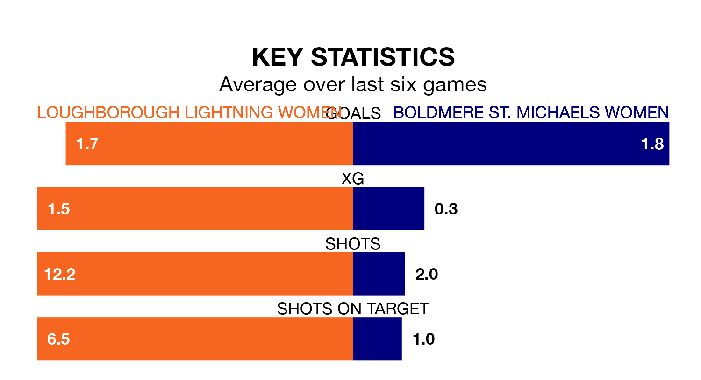

Women's National League Division One Midlands's top two sides face each other in Sunday's early kick-off, when Loughborough Lightning Women host second-placed Boldmere St. Michaels Women.
Loughborough Lightning have picked up 10 wins and one draw from 12 games so far this season, and sit four points above the visitors going into the 2pm match.
Boldmere St. Michaels, meanwhile, have won nine, picking up 27 points.
With 30 goals in 12 games so far this season, Loughborough Lightning are the league's second-highest scorers with 2.5 goals per game. And they are conceding fewer than average, letting in nine goals at a rate of 0.8 per game.
Boldmere St. Michaels are also above average scorers, with 2.1 goals per game, compared to a league average of 1.9. They have conceded 1.2 goals per game.
The hosts are in good form in Women's National League Division One Midlands, with four wins and a draw from their last six games.
With five wins and one loss over that period, the away team's form is slightly better – they have taken 15 points from 18, compared to Loughborough Lightning's 13.
In the last three years, Loughborough Lightning and Boldmere St. Michaels have played each other on three occasions. Boldmere St. Michaels won all of them.
Their last meeting was on December 17, when Boldmere St. Michaels won 2-1 at home.
Loughborough Lightning's last match was on January 14, a 1-0 win against Northampton Town Women.
Boldmere St. Michaels beat Leafield Athletic Women 3-0 last time out, also on January 14.
Updated: 13:09 (UTC), 17/01/24